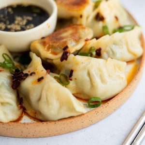

Chinese Pork Chive Dumplings

Description
Taken from christieathome
Chinese Pork Chive Dumplings made from scratch.
Delicious savoury morsels of heaven with a garlic chive pork based filling.
They are so perfect for lunch, dinner as a side or as a yummy snack.!
Ingredients
- 1 tbsp vegetable oil to fry 12-14 pieces
Meat Filling
- 1 lb ground pork
- 2 cup garlic chives finely chopped
- 3 tbsp regular soy sauce regular kind (not light or dark)
- ½ tbsp white granulated sugar
- 1 tbsp cornstarch
- 4 tbsp water
- 2 tbsp sesame oil
Dumpling Wrapper
- 3 cups all purpose flour
- 1 ½ cup hot boiling water
- ½ tsp salt
Dipping Sauce
- 2 tbsp regular soy sauce
- 2 tbsp Chinese black vinegar
- ½ tsp sesame oil
Instructions
- In a large mixing bowl, mix the Filling ingredients together. Mix very well until it forms a paste. The meat should be broken down and pasty.
- In another large mixing bowl, whisk flour and salt together. Pour hot boiling water into the dry ingredients. Then mix together until it forms a clumpy ball. If the dough is too sticky to work with, sprinkle a few more tablespoons of flour over top and knead it into a ball until it's no longer sticky.
- Flour your working surface. Then pierce a hole into the middle of the dough ball. Then shape it into a very loose circular "hoop". The hoop should be 1.5 inches thick.
- Cut the hoop in half to form two long pieces.
- Then slice those into 1 inch wide pieces or until you have 50 equal sized pieces.
- Roll each piece into a ball. Place the balls back into the mixing bowl and cover them with a moist clean towel so they do not dry out.
- Re-flour your surface and roll out one ball at a time with a rolling pin until thin. The wrappers should be about 3 inches wide in diameter.
- Fill your wrapper with a levelled off tablespoon of filling.
- Dab a little bit of water on the edges of the wrapper. Then fold one side over and pinch edges together to seal it.
- Then fold & pinch the edge to create a classic looking dumpling.
To cook dumplings
- In a hot non-stick pan set over medium heat, add oil. Lay your dumplings bottom side down. Pour enough water to cover the base of the pan. Cover with a lid.
- Steam cook for 12-13 minutes. In the last minute, remove the lid and let any excess water (if any) evaporate so the bottoms of the dumplings can crisp up.
- Serve with dipping sauce.
After trying this, you'll buss for sure
Main Page